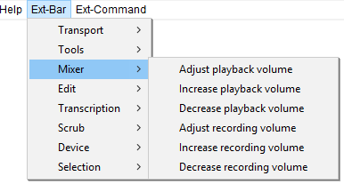

Extra Menu: Mixer
From Audacity Development Manual
The Extra > Mixer Menu provides commands for adjusting the playback and recording volumes. You can use these commands instead of manipulating the recording and playback sliders on the Mixer Toolbar.
- Click, or hover, on any menu item in the image to read about that command. Skip the image
- 
Adjust playback volume
Displays the Playback Volume dialog. You can type a new value for the playback volume (between 0 and 1), or press Tab, then use the left and right arrow keys to adjust the slider.
Increase playback volume
Each key press will increase the playback volume by 0.1.
Decrease playback volume
Each key press will decrease the playback volume by 0.1.
Adjust recording volume
Displays the Recording Volume dialog. You can type a new value for the recording volume (between 0 and 1), or press Tab, then use the left and right arrow keys to adjust the slider.
Increase recording volume
Each key press will increase the recording volume by 0.1.
Decrease recording volume
Each key press will decrease the recording volume by 0.1.